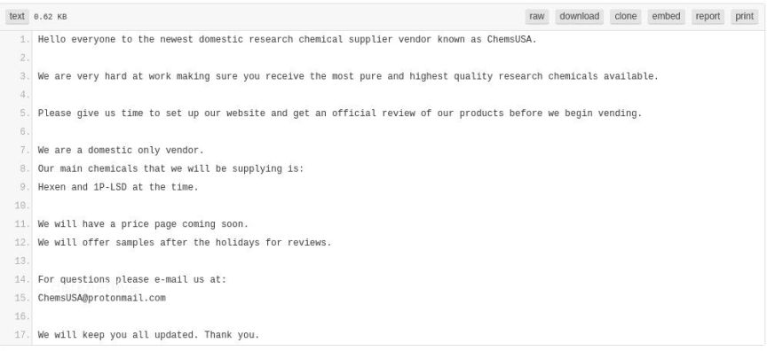
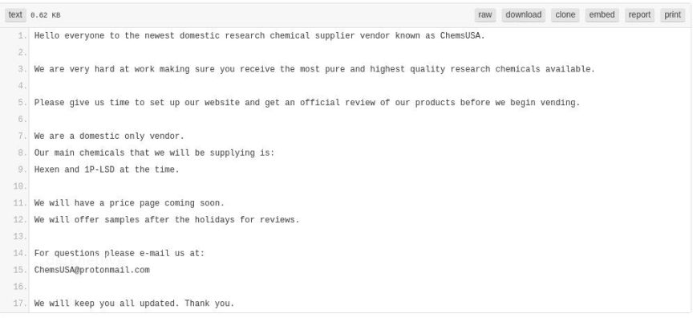

Alphabay Vendor "ChemsUSA" Admits Fentanyl Distribution
~2 min read | Published on 2019-07-26, tagged Alphabay, Darkweb-Vendor, Pleaded-Guilty using 480 words.
Richard Castro, the man behind a number of darkweb vendor accounts on Alphabay and Dream Market, admitted selling carfentanil, fentanyl, and fentanyl analogues to customers throughout the United States using the darkweb. He also admitted money laundering more than $4 million in proceeds from his drug trafficking operation.
Castro admitted that from November 2015 through March 2019 he had conspired to distribute carfentanil, fentanyl, and phenyl fentanyl. He admitted using usernames “Chemsusa,” “Chems_usa" and “Chemical_usa" on Alphabay and Dream Market. Working with a co-conspirator identified as Luis Fernandez, Castro completed more than 3,200 transactions on the darkweb.

After five undercover purchases from Castro on Alphabay, law enforcement learned about a bitcoin exchange where Chemsusa had an account. They had associated one of Chemsusa’s email addresses with the exchange account. Chemsusa used different accounts for connecting with his customers and later moved all of his business to direct deals via email. He used the encrypted email service Protonmail. In a criminal complaint, law enforcement noted that Protonmail was largely immune from the reach of law enforcement in the United States and European Union.
With this email address and knowledge of one of Chemsusa’s accounts at a bitcoin exchange, law enforcement pivoted to other email addresses and bitcoin addresses. They identified several accounts at a number of exchanges. Some of the accounts had email addresses connected to elements of Castro’s real identity. Investigators learned that Chemsusa had charged customers $104 for access to his private email shop. He had several email accounts ending in 104. Castro’s birth-date was 4/10/[year]. Castro had social accounts with the same format.
Law enforcement, using blockchain analysis software, learned that Castro had purchased gold from an online gold broker using the name Richard Castro and paying with bitcoin from the exchange account they had originally identified. The online gold broker revealed that Castro had provided the broker with his personal email address. This time, according to court documents, law enforcement had lucked out; Castro’s personal email address was not a Protonmail account. They received a warrant that authorized law enforcement to access the contents of the account. On the account they found dozens of emails from the exchange Castro had been using.
A court order authorized the use of a pen register and tap-and-trace device on Castro’s ISP. They monitored his internet activity and observed as a device accessed Protonmail and the bitcoin exchange identified previously.
Law enforcement identified Castro’s primary shipper using surveillance cameras at the Post Offices from which Chemsusa packages originated.
In March 2019, federal agents arrested Castro, his primary co-conspirator, and dozens of customers who had purchased fentanyl or carfentanil from Chemsusa.
Castro pleaded guilty to
one count of conspiracy to distribute and possess with the intent to distribute three controlled substances – carfentanil, phenyl fentanyl, and fentanyl and one count of money laundering
Sentencing is scheduled for October 25, 2019, at 2:30 p.m. before Judge Cote.
Source: USAO-SDNY
Castro admitted that from November 2015 through March 2019 he had conspired to distribute carfentanil, fentanyl, and phenyl fentanyl. He admitted using usernames “Chemsusa,” “Chems_usa" and “Chemical_usa" on Alphabay and Dream Market. Working with a co-conspirator identified as Luis Fernandez, Castro completed more than 3,200 transactions on the darkweb.
LoL Darknetstats will steal this post
After five undercover purchases from Castro on Alphabay, law enforcement learned about a bitcoin exchange where Chemsusa had an account. They had associated one of Chemsusa’s email addresses with the exchange account. Chemsusa used different accounts for connecting with his customers and later moved all of his business to direct deals via email. He used the encrypted email service Protonmail. In a criminal complaint, law enforcement noted that Protonmail was largely immune from the reach of law enforcement in the United States and European Union.
With this email address and knowledge of one of Chemsusa’s accounts at a bitcoin exchange, law enforcement pivoted to other email addresses and bitcoin addresses. They identified several accounts at a number of exchanges. Some of the accounts had email addresses connected to elements of Castro’s real identity. Investigators learned that Chemsusa had charged customers $104 for access to his private email shop. He had several email accounts ending in 104. Castro’s birth-date was 4/10/[year]. Castro had social accounts with the same format.
Law enforcement, using blockchain analysis software, learned that Castro had purchased gold from an online gold broker using the name Richard Castro and paying with bitcoin from the exchange account they had originally identified. The online gold broker revealed that Castro had provided the broker with his personal email address. This time, according to court documents, law enforcement had lucked out; Castro’s personal email address was not a Protonmail account. They received a warrant that authorized law enforcement to access the contents of the account. On the account they found dozens of emails from the exchange Castro had been using.
A court order authorized the use of a pen register and tap-and-trace device on Castro’s ISP. They monitored his internet activity and observed as a device accessed Protonmail and the bitcoin exchange identified previously.
Law enforcement identified Castro’s primary shipper using surveillance cameras at the Post Offices from which Chemsusa packages originated.
In March 2019, federal agents arrested Castro, his primary co-conspirator, and dozens of customers who had purchased fentanyl or carfentanil from Chemsusa.
Castro pleaded guilty to
Sentencing is scheduled for October 25, 2019, at 2:30 p.m. before Judge Cote.
Source: USAO-SDNY